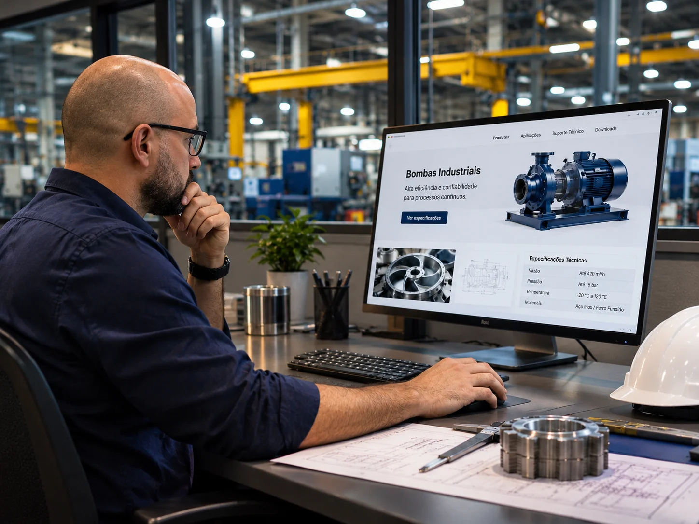

Serviços
Frentes de trabalho para vender melhor na indústria
Cada empresa começa de um ponto diferente. Combinamos as frentes abaixo conforme o momento, o público e o processo comercial da sua indústria.
Visão geral
Do primeiro clique à venda
Na indústria, a compra é longa e racional: o comprador pesquisa, compara fornecedores, envolve outras pessoas e só então fala com o comercial. O marketing industrial organiza essa jornada em cinco etapas, e cada frente de trabalho abaixo cuida de uma ou mais delas.
- 1AtrairBusca, conteúdo técnico e anúncios colocam a empresa diante de quem já procura a solução.Busca técnica e SEO
- 2ConverterPáginas claras e formulários curtos transformam visitantes em contatos.Sites e páginas de venda
- 3NutrirE-mail e WhatsApp mantêm a conversa com quem ainda não está pronto para pedir cotação.Inbound B2B
- 4QualificarCritérios combinados com o comercial separam o contato com perfil do simples curioso.Qualificação de leads
- 5VenderO comercial recebe contexto e origem de cada oportunidade e acompanha o resultado.Marketing e vendas alinhados
Frente 01
Inbound B2B
Conteúdo e páginas que acompanham o comprador técnico desde a primeira pesquisa até a conversa com o comercial, sem depender só de abordagem ativa.
- Mapa das perguntas que o comprador faz em cada etapa da decisão
- Páginas de solução, aplicação e comparação de alternativas
- Materiais ricos (guias, fichas, comparativos) com captação de contato
- Fluxo de acompanhamento por e-mail ou WhatsApp, combinado com o comercial
No funil, o conteúdo cuida do topo e do meio (quem pesquisa e compara) e as páginas de solução, junto com o comercial, cuidam do fundo (quem já avalia fornecedores).
Faz sentido quando a venda é consultiva e o comprador pesquisa bastante antes de falar com alguém.
Ver o inbound B2B em detalhe
Frente 02
Busca técnica e SEO
Estrutura e conteúdo para a empresa aparecer quando engenheiros, compradores e gestores pesquisam por produto, aplicação e problema técnico.
- Pesquisa de termos por produto, aplicação, norma e problema técnico
- Arquitetura de site pensada para a busca e para a leitura
- Textos técnicos revisados em conjunto com a sua engenharia
- Perfil da empresa no Google e presença em diretórios do setor
Faz sentido quando seus clientes pesquisam antes de pedir cotação e a concorrência aparece primeiro.
Ver o SEO para indústrias em detalhe
Frente 03
Qualificação de leads
Campanhas, tráfego pago e critérios claros para o comercial receber contatos com contexto, e não apenas nomes e telefones.
- Campanhas no Google e em redes, voltadas ao comprador técnico
- Páginas de destino por oferta, produto ou segmento
- Critérios de qualificação definidos junto com o comercial
- Contatos entregues com origem, interesse e contexto da necessidade
Faz sentido quando a empresa já recebe contatos, mas o time perde tempo com os que não têm perfil.
Ver o tráfego pago B2B em detalhe Ver a captação de leads em detalheFrente 04
Marketing e vendas alinhados
Etapas e informações em comum, para nenhuma oportunidade ficar sem retorno e para o marketing saber o que realmente avança no comercial.
- Definições em comum: o que é lead, oportunidade e venda
- Organização em planilha ou no sistema de vendas que a empresa já usa, ou implantação de um CRM com treinamento do time
- Rotina de retorno e prazos para cada tipo de contato
- Revisão periódica do que chegou, do que avançou e do que travou
Faz sentido quando marketing e vendas falam línguas diferentes e ninguém sabe qual campanha trouxe o cliente.
Ver CRM e treinamento de vendasFrente 05
Conversão e dados
Leitura do comportamento no site e no tráfego pago para ajustar mensagens, páginas e campanhas com base no que realmente acontece.
- Medição de ações: cliques no WhatsApp, formulários e downloads
- Leitura de comportamento nas páginas mais importantes
- Relatórios objetivos com o que mudou e o que ajustar
- Testes de mensagem e de página quando há volume para isso
Faz sentido quando a empresa investe em divulgação, mas não enxerga o que está funcionando.
Frente 06
Sites, páginas de venda e lojas virtuais
Sites, landing pages, páginas de venda e lojas virtuais que mostram soluções com clareza e levam o visitante ao próximo passo.
- Site institucional com linhas de produto, capacidade e certificações
- Landing pages por campanha, segmento ou produto
- Páginas de vendas quando o objetivo é pedido direto
- Lojas virtuais B2B com catálogo técnico, pagamento, frete e nota fiscal
- Fotografia, vídeo e design alinhados à identidade da empresa
Faz sentido quando o site atual é bonito, mas não explica o produto nem orienta o contato.
Ver como entregamos Ver a criação de sites em detalhe Ver as lojas virtuais em detalhe
Por onde começar
Três pontos de partida comuns na indústria
Não é preciso contratar tudo de uma vez. O diagnóstico mostra a sequência que faz sentido para o seu momento.
- A
Tenho site, mas ele não gera contatos
Normalmente o problema está na forma de apresentar e orientar. Começamos por:
- B
Quero ser encontrado por quem pesquisa
Quando a procura existe e a empresa não aparece. Começamos por:
- C
Recebo contatos que não viram venda
Quando falta critério e retorno entre marketing e comercial. Começamos por:
Não sabe em qual dos três pontos está? Responda ao diagnóstico online: são oito perguntas, cerca de três minutos, sem cadastro.
Fazer o diagnóstico onlineDúvidas frequentes
Perguntas sobre os serviços
O que acontece no diagnóstico?
Conversamos sobre seus produtos, público, processo de venda e objetivos. Ao final, indicamos por onde começar e quais frentes fazem sentido no seu caso.
Preciso contratar todas as frentes?
Não. As frentes são combinadas conforme o momento da empresa. Muitos projetos começam por uma ou duas e evoluem a partir dos dados.
Vocês atendem só indústrias?
Nosso foco é empresas industriais e B2B de venda consultiva, incluindo o agronegócio. Veja os setores na página de Setores.
Como o resultado é acompanhado?
Com base nos dados disponíveis em site, campanhas e comercial. A forma e a frequência do acompanhamento são definidas junto com você no início do projeto.
Quem cria as imagens e os vídeos?
Fotografia, vídeo e design fazem parte das frentes de trabalho e são alinhados à identidade da sua empresa.
Antes de contratar
Veja como o trabalho é conduzido e conferido
Processo, critérios de qualidade e respostas, abertos antes de qualquer proposta.
- 01Como trabalhamosAs sete etapas de um projeto, com a entrega que você recebe em cada uma.Ver as etapas
- 02Padrão de qualidadeA lista que conferimos em cada site antes de publicar, com seis grupos de verificação.Ver a lista
- 03Perguntas frequentesRespostas diretas sobre atendimento, participação da equipe e o que muda depois do lançamento.Ler as respostas
Próximo passo
Vamos conversar sobre o cenário da sua indústria
No diagnóstico, entendemos seus produtos, seu público e seu processo de venda para indicar por onde começar.
Ou comece pelo diagnóstico online: oito perguntas, cerca de três minutos, sem cadastro.
Prefere começar pelo material? Baixe o checklist do site industrial (PDF).